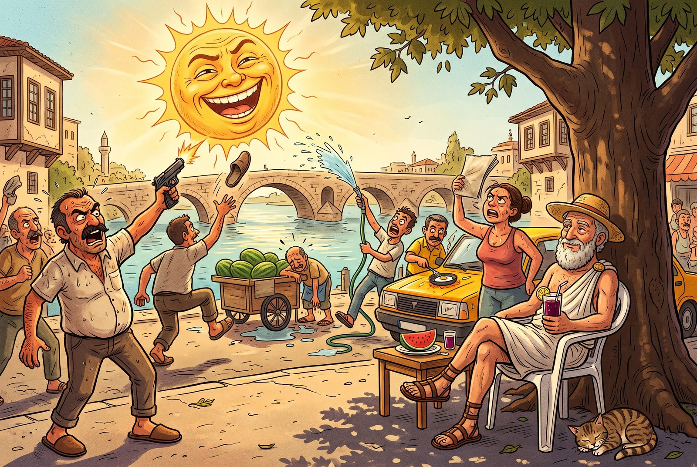

İkinci yazı · 23 Ağustos 2026
İlk Durak: Stoacılar
Bir şeyi baştan söyleyeyim: Bu defteri tek başıma tutmuyorum. Sakin yaşamı, tuhaf bir biçimde, dünyayı hızlandıran şeyin ta kendisine — yapay zekâya — sora sora araştırıyorum. Aşağıdaki de o oturumlardan birinin ayıklanmış bir dökümü. Sorular benim, kafa karışıklığı benim, sonundaki kanaat de benim; karşımdaki ise sabırla kaynak taşıyan araştırma ortağım.
Sakin yaşam felsefesi nereden çıkmış aslında? Bu işi ilk kim başlatmış?
Aslında tek bir başlangıç noktası yok. "Yavaş yaşam", bugünkü adıyla yeni bir etiket. Ama altındaki soru — "telaşa kapılmadan, kendinle barışık bir hayat nasıl kurulur?" — çok eski. Bu soruyu ilk ve en sistemli soranlardan biri Stoacılar. Sakin yaşamı araştırmaya başlar başlamaz, neredeyse her yol dönüp dolaşıp onlara çıkıyor.
Peki kim bu Stoacılar? Anlatsana biraz.
Stoacılık, bundan aşağı yukarı 2300 yıl önce Atina'da başlamış. Kıbrıslı Zenon adında biri, "stoa" denen revaklı sütunların altında ders veriyormuş; akımın adı da oradan geliyor. Ama asıl ünlü isimler sonradan Roma'da çıkmış. İlginç olan şu: aynı felsefe hem bir imparatora (Marcus Aurelius), hem bir dönem sürgüne gönderilmiş bir devlet adamına (Seneca), hem de eskiden köle olan birine (Epiktetos) hitap edebilmiş. Yani sarayda da işe yaramış, dibe vurmuşken de.
Özünde söyledikleri şu: Huzur dışarıdan gelen şeylerde değil — ne parada, ne şöhrette, hatta ne de sağlıkta. Huzur, senin karakterinde ve olaylara nasıl tepki verdiğinde. Bütün mesele de neyin senin elinde olduğunu, neyin olmadığını ayırt edebilmekte.
Bir de somut örnek ver. Bunlar günlük hayatta neye denk geliyor?
Kontrol ayrımı. Epiktetos'un meşhur ayrımı. Bir yanda tamamen bizim elimizde olanlar: düşüncelerimiz, tepkilerimiz, kararlarımız. Öbür yanda hiç elimizde olmayanlar: hava, trafik, geçmiş, başkasının bizim hakkımızda ne düşündüğü. Somut hâli: Sabah trafiğe takıldın. Trafik senin elinde değil; ama ona köpürüp günü zehir etmek ya da radyoyu açıp sakin kalmak senin elinde. Yağmura kızmak kadar beyhude bir şey yok — ama gün boyu hepimiz "yağmura kızıp" duruyoruz.
Zaman ve meşguliyet. Seneca'nın "Hayatın Kısalığı Üzerine" diye bir mektubu var; iki bin yıl önce yazmış ama sanki bugünü anlatıyor. Diyor ki: "Hayat kısa değil; biz onun büyük kısmını boşa harcıyoruz." Örneği de tokat gibi: Malımıza mülkümüze cimriyiz, kimseye beş kuruş kaptırmayız. Ama zamanımızı herkese cömertçe dağıtırız — boş toplantılara, başkalarının hırslarına. Biri paranı çalsa ayağa kalkarsın; ömrünü çalana pek ses çıkarmazsın.
Kötüyü önceden düşünmek. Bir de kötü ihtimalleri önceden zihinde prova etmek var. Kulağa karamsarlık gibi geliyor ama tersi bir işe yarıyormuş: elindekini hafife almamayı, kaybettiğinde de yıkılıp kalmamayı sağlıyor. Daha ileri gidip "kaderini sev" (amor fati) diyorlar — başına geleni koca bir bütünün parçası olarak kabul etmek.
Bir de sık yapılan bir yanlış anlama var: Stoacılık "hiç duygu duyma, robotlaş" demek değil. Onların "apatheia" dediği şey, insanı esir alan yıkıcı tutkulardan — kontrolsüz öfke, panik, haset — arınmak. Sevmeyi, sevinmeyi yasaklamıyorlar; seni yöneten değil, senin yönettiğin bir duygusal hayat istiyorlar.
İyi de bütün bunların sakin yaşam konseptiyle ne ilgisi var? Ne zenginlik katıyorlar ki?
İyi soru, çünkü sakin yaşam kendi başına biraz iskeletsiz dolaşıyor — güzel kahve, keten gömlek, köy evi. Stoacıların kattığı şey tam da o eksik iskelet.
Önce, yavaşlığa bir neden veriyorlar: mesele hız değil, neyin senin elinde olduğunu ayırt etmek. Yavaşlık bir zevk tercihinden çıkıp bir disipline dönüşüyor. İkincisi, kaçışı gereksiz kılıyorlar: huzur bir yerde değil, kafanın içinde diyorlar — yani işi bırakıp köye taşınmana gerek yok, şehrin ortasında da olur. Üçüncüsü, "boş vermek" ile "sükûnet"i ayırıyorlar; sükûnet pasiflik değil, enerjiyi doğru yere yöneltmek. Bir de Seneca'yla birlikte hızın eleştirisine iki bin yıllık bir dil geliyor: meşgul olmak, yaşamak demek değil.
Ama dürüst olmak gerekirse: Stoacılar sakin yaşamın "irade ve zihin" ayağını sağlamlaştırıyor, "haz, bağ, doğa" ayağını epeyce boş bırakıyor. Yani onlar bu işin omurgası olabilir ama eti değil; o tarafı başka düşünürlerde aramak gerekiyor.
Kulağa fazla güzel geliyor. Bu kadar kusursuz mu, eleştiren yok mu?
Var, hem de ciddileri. "Boyun eğdiriyor" itirazı: Madem aynı felsefe hem imparatora hem köleye "iç dünyana çekil, kabullen" diyebiliyor, o hâlde bozuk düzeni değiştirmiyor, sadece ona katlanmayı kolaylaştırıyor olabilir. Marx, Hegel çizgisinin derdi bu — teselli, bazen uyuşturucu gibidir.
"Dışarısı da lazım" itirazı: Aristoteles, insanın yalnızca erdemle mutlu olamayacağını söylüyor. Aç bir insana, ağır hastaya "yeter ki doğru düşün, mutlu olursun" demek fazla ütopik; yeşermek için asgari bir sağlık, dostluk, güvenlik de gerekiyor.
"Duyguyu bastırma" itirazı: Modern psikolojiye göre duygular birer veri. Haksızlığa duyulan öfke harekete geçiren yakıt, kaybın ardından tutulan yas bir onarım süreci. Hepsini "yanlış yargı" deyip bastırmak, bugünkü tabirle "toksik pozitifliğe" kayabiliyor. Nietzsche bunu "kendine zorbalık" diye eleştiriyor.
"Evren o kadar da akıllı değil" itirazı: Stoacılar evrenin akıllı, düzenli bir plana göre işlediğine inanıyor; "kaderini sev" derken de bu güvene yaslanıyorlar. Ama Camus, Sartre gibi düşünürler "ya evren kayıtsız, hatta absürtse?" diye soruyor. O zaman "her şeyin bir anlamı var" demek, kaotik bir dünyada kendimize uydurduğumuz bir teselli olabilir.

Peki oturumdan bana ne kaldı?
Ben ne filozofum ne de bu işin uzmanı; daha yeni tanışıyorum. Ama bu oturumdan aklımda kalan şu: Stoacılık bana bir "yaşam dini" gibi değil, bir "alet" gibi mantıklı geliyor. O kontrol sorusu — "bu benim elimde mi, değil mi?" — günlük kaygının yarısını daha en baştan eliyor. Bu tarafı fena hâlde işime yarıyor. Adana'da güneşe kurşun sıkan adamı Epiktetos görseydi, ders kitabına koyardı.
Ama eleştirenler de haksız değil. Bu felsefe bir "alet" olmaktan çıkıp "her şeyin cevabı" hâline gelince tehlikeye giriyor: değiştirebileceğin şeyleri "kaderdir" diye bırakmana, hissetmen gereken şeyleri bastırmana bahane olabiliyor.
Benim aklımda tutacağım ayrım da şu — galiba benim eklediğim yer burası: Deprem ülkesinde yaşadığımı kabullenmek akıllıca bir Stoacılık. Ama kumluk zemine yirmi katlı bina dikip "gerisi kaderdir" demek Stoacılık değil; tembelliğin kadere kılıflanmış hâli. Yani iş, aleti nerede kullanacağını bilmekte: gerçekten elinde olmayana sükûnetle razı olmak, ama elinde olanı da "sükûnet" bahanesiyle savsaklamamak.
Bir de şu kaldı: Stoacılar bana yavaşlığın omurgasını verdi ama etini vermedi. Eti — hazzı, bağı, doğayı — başka duraklarda arayacağım. Dozunu da hâlâ ayarlıyorum, açıkçası. Ama ilk durak fena değildi. Sıradaki durakta belki Epikuros'a uğrarız; duyduğuma göre onların "mutluluk" tarifi bambaşkaymış.
Bu "elimizde olan / olmayan" ayrımının günlük hayatta nereye oturduğuna dair: sakin yaşamdan ne anladığımız. Acele yok zaten.